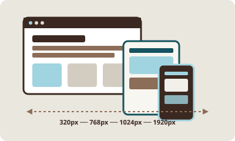
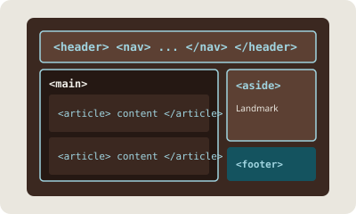
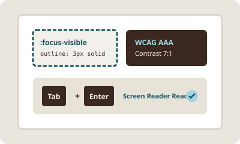
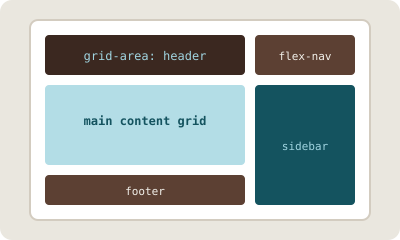
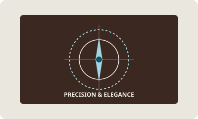
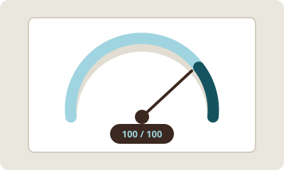

Your code determines who has access to information and how the world experiences it. Construct responsive, accessible digital spaces grounded in engineering precision.
Constructing interfaces that respect user context across every device width. Mobile-first engineering built with semantic HTML5, CSS Grid macro-layouts, and vanilla JavaScript.

Responsive Design
Mobile-First Fluid Layout Systems
Start with constraints on 320px viewports, then expand systematically using min-width media queries at 768px and 1024px to ensure seamless canvas adaptability.

Semantic HTML
Landmarks & Meaningful Semantics
Replace indiscriminate div nesting with intentional header, nav, main, section, article, and footer landmarks for search engine parsing and screen reader navigation.

Accessible Interfaces
WCAG Alignment & Keyboard Access
Enforce visible :focus-visible outlines, 7:1 color contrast ratios, screen reader ARIA states, and native keyboard tab stops across all user controls.

CSS Architecture
Grid for Macro, Flexbox for Micro
Employ CSS Grid for multi-column page regions and structural boundaries, while leveraging Flexbox for localized component alignment and icon button groups.

Frontend Craft
Refined 2025 Palette & Micro-Details
Harmonize warm Mocha Mousse tones with Moonlit Grey backgrounds and Ethereal Blue accents to form a grounded, dignified aesthetic free of SaaS clichés.

Digital Experience
Lightweight Vanilla Execution
Zero heavyweight framework overhead. Native ES6+ JavaScript handles user state, drawer toggles, and active link states with sub-millisecond execution times.
Live Inspector
Architecture Blueprint
Select a component tab to inspect the clean CSS Grid, Flexbox, and Vanilla JS rules powering this interface.